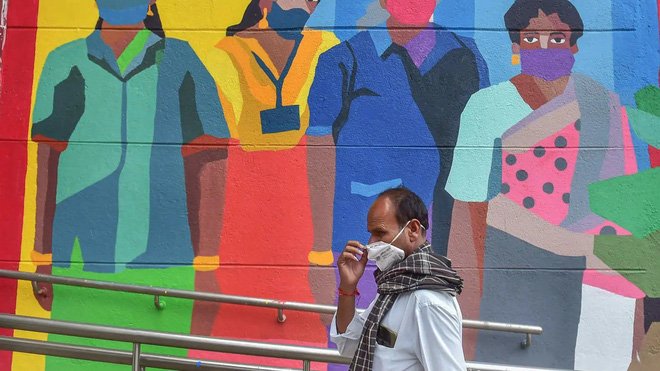
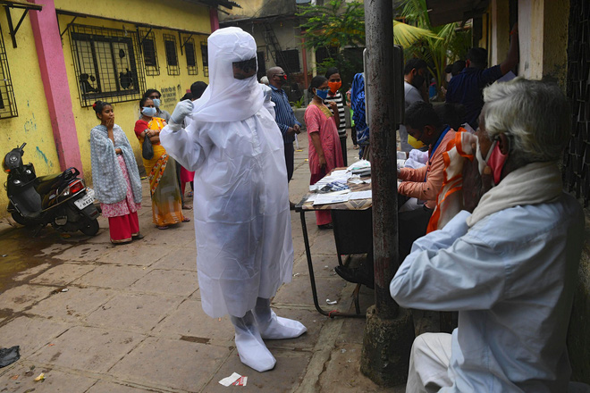

Trong một nghiên cứu mới công bố trên tạp chí Y khoa Lancet, các nhà dịch tễ học hàng đầu thế giới cho biết họ đã bắt đầu phải xem xét COVID-19 dưới lăng kính của một dịch bệnh hiệp đồng (Syndemics) thay vì một đại dịch riêng lẻ (Pandemic) như trước đây.
Dịch bệnh hiệp đồng được định nghĩa là một tập hợp các vấn đề sức khỏe liên quan đến hai hoặc nhiều bệnh khác nhau. Chúng có tương tác hiệp đồng với nhau góp phần làm tăng gánh nặng bệnh tật lên toàn bộ dân số.
Trong trường hợp của COVID-19, nghiên cứu trên Lancet cho thấy năm 2019 thế giới đã có sẵn một "perfect storm" (hay cơn bão hoàn hảo) gồm một loạt các dịch bệnh mạn tính không lây như béo phì, tiểu đường, bệnh tim mạch, huyết áp cao và các vấn đề về phổi.
Sự xuất hiện thêm của một dịch bệnh truyền nhiễm dễ lây, tấn công mạnh và gây ra nguy cơ tử vong cao cho nhóm bệnh nhân này chính là ngòi nổ cuối cùng cho một Syndemics.
Thuật ngữ dịch bệnh hiệp đồng được các nhà khoa học đưa ra từ năm 1990 nhằm xác định một chiến lược kiểm soát tổng quát hơn dành cho các dịch bệnh đi kèm với nhiều yếu tố phức tạp. Khác với đại dịch đơn lẻ, một dịch bệnh hiệp đồng đòi hỏi chúng ta phải ngăn chặn và kiểm soát tất cả các dịch bệnh cùng lúc mới có thể dập tắt được nó.
Các nhà dịch tễ học bây giờ đang kiến nghị việc đổi tên COVID-19 thành COVID-20 để bắt đầu quản lý nó bằng các biện pháp kiểm soát dịch bệnh hiệp đồng, như cách chúng ta đã làm với HIV/AIDS, lạm dụng chất kích thích và bạo lực trước đây.
Công bố trên Lancet là Nghiên cứu Gánh nặng Bệnh tật Toàn cầu (GBD), một nghiên cứu toàn diện nhất trong lĩnh vực để đưa ra những cái nhìn khách quan nhất về sức khỏe cơ bản của dân số toàn thế giới.
Năm 2020, GBD được thực hiện một cách đặc biệt vì nó cần đánh giá cả những tác động của COVID-19, một đại dịch đã lây nhiễm hơn 40,3 triệu người và cưới đi sinh mạng của 1,1 triệu người trên thế giới.
Ngoài ra, các nhà dịch tễ học đã phân tích tổng cộng 286 nguyên nhân gây tử vong trên người, 369 loại bệnh tật, thương tích và 87 yếu tố nguy cơ tại 204 quốc gia và vùng lãnh thổ. Kết quả cho thấy những nguyên nhân hàng đầu gây ra tình trạng sức khỏe kém ở những người trung niên và người già từ 50 tuổi trở lên là bệnh tim thiếu máu cục bộ, đột quỵ và tiểu đường.
Ở những người trẻ hơn - từ 10 đến 49 tuổi - chấn thương trên đường, HIV/AIDS, đau thắt lưng và rối loạn trầm cảm sẽ chiếm ưu thế.
Nghiên cứu Gánh nặng Bệnh tật Toàn cầu phát hiện ra rằng sự gia tăng của các bệnh mạn tính, kết hợp với sự thất bại của sức khỏe cộng đồng trong việc giải quyết các yếu tố nguy cơ có thể phòng ngừa, đã khiến dân số dễ bị tổn thương bởi COVID-19.
Richard Horton, tổng biên tập của tạp chí Lancet cho biết: "COVID-19 là một trường hợp khẩn cấp về sức khỏe cấp tính và mạn tính". Ông chính thức gọi đại dịch kết hợp với tỷ lệ béo phì, tiểu đường và các bệnh mãn tính khác cao trên toàn cầu là một dịch bệnh hiệp đồng.
"Tính chất 'cộng hưởng' của mối đe dọa mà chúng ta phải đối mặt đòi hỏi chúng ta không thể chỉ xử lý từng căn bệnh một mà còn phải khẩn trương giải quyết những bất bình đẳng xã hội tiềm ẩn đang hình thành chúng", Horton nói.
Tiến sĩ, bác sĩ James J. James - cựu giám đốc Trung tâm Chuẩn bị Y tế Công cộng và Ứng phó Thảm họa của Hiệp hội Y khoa Hoa Kỳ đồng ý với điều đó.
Ông nhấn mạnh trong một dịch bệnh hiệp đồng, vấn đề mà chúng ta cần quan tâm không chỉ dừng lại ở bản thân các căn bệnh, mà nó còn được thúc đẩy bởi các yếu tố kinh tế xã hội như đói nghèo, chênh lệch sức khỏe, bất bình đẳng giữa các nhóm quần thể.
Bác sĩ James cho biết COVID-19 không chỉ gây ra thiệt hại về sức khỏe, nó còn gây thiệt hại lớn về tài sản do xã hội bị cô lập, các trường và doanh nghiệp bị đóng cửa dẫn đến hiệu ứng domino của các vấn đề như đấu tranh sức khỏe tâm thần và ngừng điều trị.
Một bộ phận dân số, chẳng hạn như người cao tuổi, người da đen và người nghèo dễ bị tổn thương và tử vong hơn nhiều. Điều này đòi hỏi những can thiệp của chúng ta phải vượt xa những gì cộng đồng y tế nghĩ rằng họ cần cho một dịch bệnh đơn lẻ.
Đã đến lúc cộng đồng y tế toàn cầu phải thay đổi hướng tiếp cận với COVID-19, Horton cho biết. Việc gọi nó là một dịch bệnh hiệp đồng sẽ mang lại một tầm nhìn bao quát hơn, bao gồm cả các lĩnh vực khác như giáo dục, việc làm, nhà ở, thực phẩm và môi trường, ông viết trong một bài xã luận đính kèm nghiên cứu trên Lancet.
Bác sĩ James vì thế đã đề xuất đổi tên đại dịch COVID-19 thành dịch bệnh hiệp đồng COVID-20 để thể hiện quy mô của một cuộc khủng hoảng lớn, ảnh hưởng sâu sắc tới dân số toàn thế giới. Theo ông, các hướng tiếp cận giải quyết một đại dịch – chẳng hạn như có được một loại vắc-xin hiệu quả - bây giờ cũng khó có thể một mình chấm dứt COVID-19.
Ngoài ra, sự lan rộng của nó đang khiến bác sĩ James phải cân nhắc coi COVID là một bệnh mạn tính đặc hữu, nghĩa là cả thế giới phải chấp nhận sống chung với nó để chiến đấu lâu dài giống với những gì chúng ta đang làm với HIV/AIDS.
Đổi tên COVID-19 thành COVID-20 cũng sẽ làm giảm bớt nỗi sợ hãi gay gắt sinh ra từ những ngày đầu tiên của đại dịch, đưa COVID trở về đúng với bản chất của nó là một đại dịch hiệp đồng có thể quản lý được tập trung vào nhóm các bệnh nhân có bệnh mãn tính và người cao tuổi.
Horton cho biết các bệnh mạn tính như huyết áp cao, đường huyết cao, béo phì và cholesterol cao mà hàng triệu người trên thế giới mắc phải đã đóng một vai trò quan trọng trong việc dẫn đến hơn 1 triệu ca tử vong do COVID-19 gây ra cho đến nay.
Những vấn đề sức khỏe đó - do chế độ ăn uống không lành mạnh và mức độ tập thể dục không đủ gây ra- "sẽ tiếp tục định hình sức khỏe ở mọi quốc gia ngay cả sau khi đại dịch đã lắng xuống", ông nói.